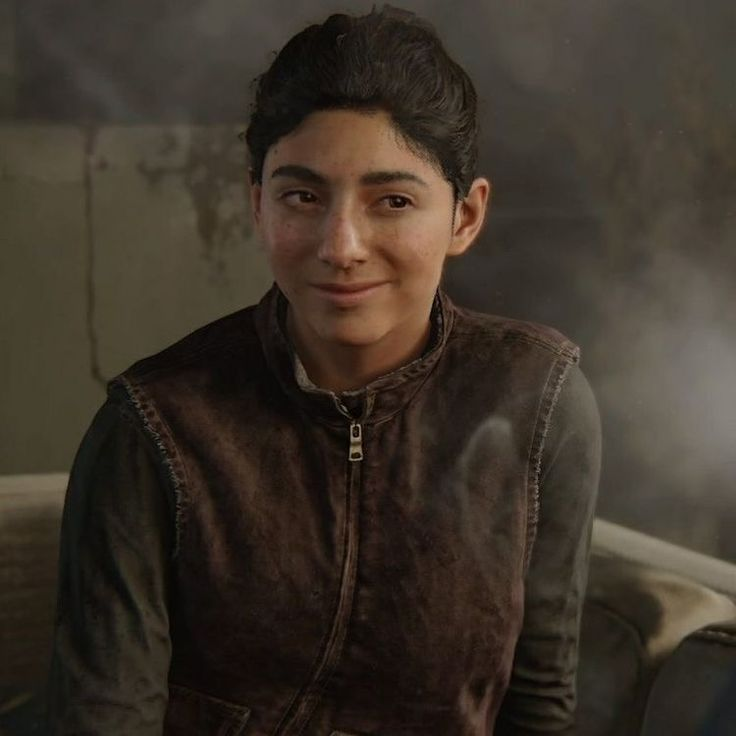
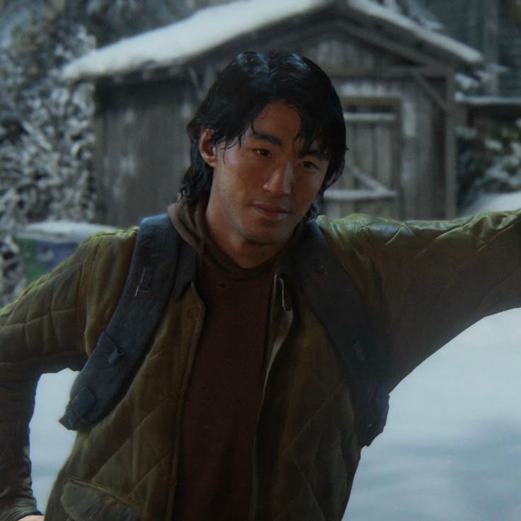

The Last of Us traz personagens complexos que vivem em um mundo pós-apocalíptico brutal. Cada um carrega cicatrizes do passado e enfrenta dilemas éticos profundos. Suas histórias exploram temas como sobrevivência, perda, amor e redenção.

